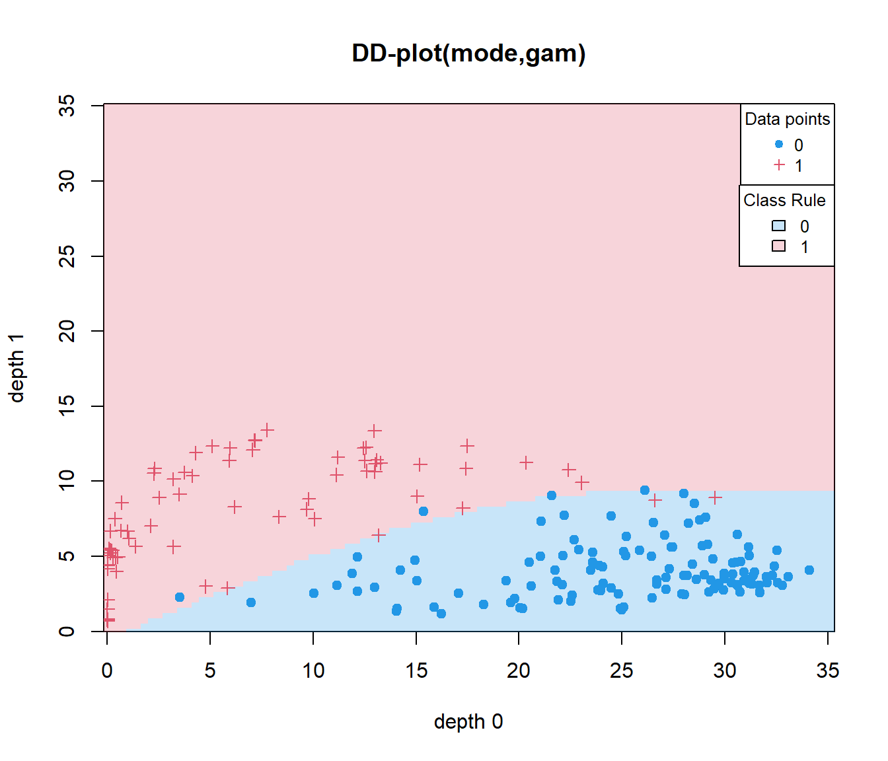

Chapter 3 Functional Supervised Classification
This section describes the usage of functional classification using fda.usc package in R.
Let a sample \((\mathcal{X},Y)\in E \times \mathbb{G}={1,\cdots,G}\).
Aim: How predict the class \(g\) of Y (categorical variable) given a functional variable \(\mathcal{X}\)
Bayes rule: Estimate the posterior probability of belonging to each group:
\[p_g(X)=\mathbb{P}(Y=g | \mathcal{X}=\chi)=\mathbb{E}(1_{Y=g} |\mathcal{X}=\chi)\]
The predicted class is given by the Bayes rule,
\[\hat{Y}=\arg \max_{g\in \mathbb{G}} \hat{p}_g(\chi)\]
The package allows the estimation of the groups in a training set of functional data by
- Logistic Classifier (linear model):
classif.glm - Logistic Classifier (additive model):
classif.gsamandclassif.gkam - k-Nearest Neighbor Classifier:
classif.knn - Kernel Classifier:
classif.kernel - Distance Classifier: `classif.distv
- Maximum Depth Classifier:
classif.depth - DD Clasisifier:
classif.DD
library(fda.usc)
data(tecator)
x=tecator$absorp.fdata
tecator$y$Fat<-ifelse(tecator$y$Fat>20,1,0)
x.d1<-fdata.deriv(x)
dataf=as.data.frame(tecator$y)
ldat = ldata("df"=dataf,"x"=x,"x.d1"=x.d1)
ycat<-ldat$df$Fat3.1 Logistic Regression Model (GLM): classif.glm
As a particular case of Generalized Linear Models, the logistic regression model models the posterior probability given \(\mathbf{d}\) as
\[ p(Y=i|\mathcal{X}(t))=\log \left(\frac{p(Y=i|\mathcal{X}(t))}{1-p(Y=i|\mathcal{X}(t))}\right)=\alpha_i+ \left\langle \mathcal{X}_i(t),\beta_{i}(t)\right\rangle\]
where the curve \(\mathcal{X}(t)\) is assigned to class \(i\) if \(p(i|\mathcal{X})>p(j|\mathcal{X}), j=1,\cdots, g, j\ne i\).
res.bin=fregre.glm(Fat~x,ldat,family=binomial())
res.glm<-fda.usc:::classif.glm(Fat~x,data=ldat)
summary(res.glm)## - SUMMARY -
##
## -Probability of correct classification by group (prob.classification):
## 0 1
## 1 1
##
## -Confusion matrix between the theoretical groups (by rows)
## and estimated groups (by column)
##
## 0 1
## 0 138 0
## 1 0 77
##
## -Probability of correct classification: 13.2 Generalized Additive Models (GAM): classif.gsam and classif.gkam
Generalized Additive Models (see Wood (2004)) relax the linearity assumption in GLMs, allowing the use of a sum of general smooth functions \(f_j\) for the posterior probability; i.e.,
\[ p(Y=i|\mathcal{X}(t))=\log \left(\frac{p(Y=i|\mathcal{X}(t))}{1-p(Y=i|\mathcal{X}(t))}\right)=\alpha_i+ f_i\left(\mathcal{X}_{i}(t)\right)\]
where the functions \(f_{i}\) may belong to a known parametric family (polynomials, for instance) or they may even be functions to be estimated non-parametrically.
## - SUMMARY -
##
## -Probability of correct classification by group (prob.classification):
## 0 1
## 1 1
##
## -Confusion matrix between the theoretical groups (by rows)
## and estimated groups (by column)
##
## 0 1
## 0 138 0
## 1 0 77
##
## -Probability of correct classification: 13.3 Nonparametric classification methods: classif.knn and classif.np (Frédéric Ferraty and Vieu 2003)
These methods are based on non-parametric estimates of the densities of the groups. The most simple (and classical) one is \(k\)–nearest neighbour (\(k\)NN) in which, given \(k \in \mathbb{N}\), the point \(\mathbf{d}\) is assigned to the class containing a majority of the \(k\) nearest data points in the training sample.
Another possibility is to estimate \(p(Y=g|\mathcal{X})\) through the Nadaraya–Watson estimator:
\[p(Y=g|\mathcal{X})=\frac{\sum_{n=1}^N \mathbf{1}_{G_n=g}\ K\left(m(\mathcal{X},\mathcal{X}_i(t))/h\right)}{\sum_{n=1}^N K\left(m(\mathcal{X}_i(t))/h\right)},\]
where \(N\) is the size of the training sample, \(G_n\) is the class of \(i\)-th curve in the training sample, \(K\) is a kernel and \(m(\cdot,\cdot )\) is a measure of closeness between two curves (a suitable distancewhich is re-scaled by the bandwidth parameter \(h\)) .
## y
## 0 1
## 0.8550725 0.7142857A \(k\)NN method could be considered an NP method using the uniform kernel and a locally selected bandwidth.
## y
## 0 1
## 0.7826087 0.70129873.4 Maximum depth: classif.depth (Li, Cuesta-Albertos, and Liu 2012)
The most basic rule is to assign a new observation \(x_0\) to the group that provides the highest depth to that observation (Maximum depth (MD)). The maximum depth classifier was the first attempt to use data depths instead of multivariate raw data to construct a classification rule.
Perform the following example with hidden code
Given a sample depth measure and a new observation \(x_0\) (use the xx.d1 curves):
- Evaluate the depth of \(x_0\) in both sub-samples defined by
ycatvariable (only the first 10 values are printed)
## Depth g1 0.4811594 0.164058 0.5717391 0.5602899 0.4068116 0.127971 0.1237681 0.7730435 0.3373913 0.2971014## Depth g2 0.4811594 0.164058 0.5717391 0.5602899 0.4068116 0.127971 0.1237681 0.7730435 0.3373913 0.2971014- Assign \(x_0\) according to the data set where it is more deeply placed.
## group.est: 0 1 0 0 1 1 1 0 1 1## ycat : 1 1 0 0 1 1 1 0 0 0The function classif.depth performs previous tasks:
res.depth<-classif.depth(ycat,x.d1,depth="FM")
data.frame(res.depth$dep,group.est,res.depth$dep-cbind(d1,d2))[1:10,]## X1 X2 group.est d1 d2
## 1 0.4811594 0.4051948 0 0 0
## 2 0.1640580 0.4766234 1 0 0
## 3 0.5717391 0.2659740 0 0 0
## 4 0.5602899 0.2522078 0 0 0
## 5 0.4068116 0.5083117 1 0 0
## 6 0.1279710 0.3948052 1 0 0
## 7 0.1237681 0.3254545 1 0 0
## 8 0.7730435 0.3135065 0 0 0
## 9 0.3373913 0.4568831 1 0 0
## 10 0.2971014 0.4238961 1 0 03.5 The DD\(^G\)–classifier classif.DD (J. A. Cuesta-Albertos, Febrero-Bande, and Oviedo de la Fuente 2017)
Suppose that we have implementations of a process in the product space \(\mathcal{X}=\mathcal{X}_1\times\cdots\times\mathcal{X}_p\) (multivariate (functional) data) where we have \(g\) groups (classes or distributions) to be separated using data depths. The DD\(^G\)–classifier begins by selecting a depth \(D\) and computing the following map (for \(p=1\)):
\[ \mathcal{ X} \rightarrow \mathbb{R}^g \\ x \rightarrow \mathbb{d}=({D}_1(x),\cdots,{D}_g(x)). \]
We can now apply any available classification procedure that works in a \(g\)–dimensional space to separate the \(g\) groups.
where \(D_0k(x)\) is the depth of x with respect to the group \(k = 1,\cdots,g\). So, the DDG -Classifier compresses the information of \({y_i,x_i}\) into a real space of dimension \((g + 1)\) with the form \(\left\{y_i,D_1(x_i),\cdots,D_g(x_i)\right\}\).
Classification techniques in \(\mathbb{R}^g\):
- Linear Discriminant Analysis (LDA)
- Quadratic Discriminant Analysis (QDA)
- Generalized Linear Models (GLM)
- Generalized Additive Models (GAM)
- k-Nearest Neighbors (kNN)
- Kernel Classification Method (NP)
- Classification Trees (Tree)
- ANN, SVMs, …
The aim of the DD-classifier ((Li, Cuesta-Albertos, and Liu 2012)) is to extend the Maximum depth classifier using a polynomial up to degree k passing through the origin as classification rule.
The DD–classifier has resolved several serious limitations of the maximum depth classifier .
Properties of the DDG -classifier:
A lot of classification methods available (All in the multivariate framework)
Using classical classification methods in the DD-plot can provide useful insights about what’s going on (which depths are influential or probabilities of belonging to a certain group).
Possible reduction in the dimension of the classification problem, specially interesting in the Functional Framework (or in High Dimensional problems).
No matters how complex is the space to be analyzed, only matters that a depth function can be defined (for example, multivariate functional data MFD: \(\mathcal{X}=\mathcal{X}_1\times\cdots\times\mathcal{X}_p\).
Example DD with 2 groups

## group
## 0 1
## 0.8260870 0.9350649## group
## 0 1
## 0.9782609 0.9610390Example dDD with G groups
#ycat<-cut(ldata$df$Fat,3,labels=1:3)
# DD-classif for functional data: G levels
data(phoneme)
mlearn<-phoneme[["learn"]]
mlearn2<-phoneme[["test"]]
glearn<-as.numeric(phoneme[["classlearn"]])-1
out20=classif.DD(glearn,mlearn,depth="mode",classif="glm")out21=classif.DD(glearn,list(mlearn,mlearn2),depth="modep",classif="glm",control=list(draw=F))
out20 # univariate functional data##
## -Call:
## classif.DD(group = glearn, fdataobj = mlearn, depth = "mode", classif = "glm")
##
## -Probability of correct classification: 0.928##
## -Call:
## classif.DD(group = glearn, fdataobj = list(mlearn, mlearn2), depth = "modep", classif = "glm", control = list(draw = F))
##
## -Probability of correct classification: 0.9523.6 Classifiers adapted from Multivariate Framework
The idea is to recycle all the procedures known in the Multivariate Frameworkconverting an object of infinite dimension into a finite dimension. When to apply: + The basis is enough for accounting all information. + Binary/multiclass problems depends on multivariate classifier method.
data(phoneme)
ldat=ldata("df"=data.frame(glearn=phoneme$classlearn),"x"=phoneme$learn)
# require e1071 package
res.svm=classif.svm(glearn~x,data=ldat)
# require nnet package
res.nnet=classif.nnet(glearn~x,data=ldat,trace=FALSE)
# require rpart package
res.rpart=classif.rpart(glearn~x,data=ldat)
round(mean(res.svm$prob.classification),3)## [1] 0.904## [1] 0.888## [1] 0.896Add utilities in the classification functions: for example, majority voting scheme (by default ONE vs REST). R example (work in progress)
ii<- c(1:10,51:60,101:110,151:160,201:250)
mlearn<-phoneme[["learn"]][ii];glearn<-phoneme[["classlearn"]][ii]
mtest<-phoneme[["test"]];gtest<-phoneme[["classtest"]]
dataf<-data.frame(glearn);ldat=ldata("df"=dataf,"x"=mlearn);newdat<-list("x"=mtest)
a1<-classif.glm(glearn~x, data = ldat)
a2<-classif.glm(glearn~x, data = ldat,type="majority")
a3<-classif.glm(glearn~x, data = ldat,type="majority",weights=c(rep(4,len=40),rep(1,50)))
# mean(predict(a1,newdat)==gtest);mean(predict(a2,newdat)==gtest);mean(predict(a3,newdat)==gtest)